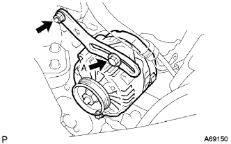
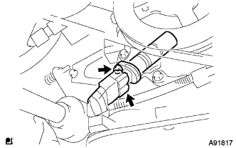

Remove cylinder head gasket (1NZ-FE (4WD)) |
| 1. Fuel leakage prevention work |
| 2. Battery minor Starminal cut off |
reference| 3. Remove the front tire RH |
Remove the hub nut and remove the front tire.
| 4. Remove the cylinder head cover No.2 |
 |
Remove the four nuts and remove the cylinder head cover No.2.
| 5. Ignition coil No.1 |
Remove the connector and bolt of the ignition coil and remove all the ignition coils.
| 6. Cut the ventilation hose |
 |
Cut the ventilation hose.
| 7. Ventilation hose No.2 disconnected |
 |
Cut the No.2 ventilation hose.
| 8. Air cleaner ASSY removal |
Cut the VSV connector and two hoses.
Separate the airflow meter and the wire harness clamp.
Remove the air cleaner cap w/air cleaner hose No.1.
Remove the air cleaner filter element.
 |
Remove the four bolts, remove the air cleaner case, the No.1 air cleannine let and air cleannine let No.2.
| 9. Cylinder head cover SUB-ASSY |
 |
Remove 9 bolts and two nuts and remove the cylinder head cover.
| 10. Fan & Alternator V Belt removed |
 |
Loosen the adjustment bolt A and the fixing bolt B.
Remove the V belt by loosening the tension of the V belt.
| 11. Alternator ASSY removes |
 |
Take off the terminal cap.
Remove the nut and remove the+B terminal.
Cut the connector.
Take off the wire harness clamp.
|  |
Remove the bolt A and nuts and remove the fan belt agasting bar.
 |
Remove the bolt B and remove the alternator.
| 12. The engine Anda cover RH is removed |
Remove two bolts and two screws.
Remove the nut and remove the engine undercover RH.
| 13. Drain the engine oil |
| 14. Cooling solution (Toyota genuine super LLC) extract |
Open the radiator cap.
Loosen the radiator dollen cock plug and extract the cooling solution.
| 15. Vane pump V belt (power steering belt) is removed |
 |
Loosen the fixing bolt A and bolt B for adjustment.
Remove the V belt by loosening the tension of the V belt.
| 16. Water pump pulley removed |
 |
Use SST to fix the water pumpuri.
Remove the three bolts and remove the water pumpuri.
| 17. The engine warot pump is removed |
 |
Remove 3 bolts and two nuts and remove the water pump ASSY.
| 18. The engine mounting insulator SUB-ASSY RH is removed |
 |
Supporting the engine with a jack via a piece of wood.
 |
Remove 5 bolts and nuts and remove the engine mounting insulator RH.
| 19. The engine mounting bracket RH is removed |
 |
Remove the four bolts and remove the engine mounting bracket RH.
| 20. Remove crankshaft Dampa SUB-ASSY |
 |
No.1 Cylinder compressed death point set
Rotate the crankshaft dampa correctly and match the matching mark (notch) to the position of the chieen cover 0 °.
At this time, confirm that the combination of the camshaft timing gear is at the figure in the figure.
Operate the jack, lower the engine front side, and set the SST to set.
 |
Use SST to fix the crankshaft dampa and remove the bolt.
Remove the crankshaft Dampa.
| 21. Remove the crank position sensor |
|  |
Cut the connector.
Remove the bolt and remove the crank position sensor.
| 22. Camshaft timing oil control valve ASSY is removed |
Camshaft timing Oil Control valve is disconnected.
Remove the bolt and remove the camshaft timing oil control valve.
| 23. Oil pump ASSY removes |
 |
Remove 15 bolts and nuts.
Use a flathead screwdriver wrapped with protective tape to remove the oil pump ASSY.
| 24. Remove the oil pump seal |
 |
Use a flathead screwdriver with protective tape to remove the oil seal.
| 25. Chain tensioner ASSY No.1 removed |
 |
 |
Push the plunger in the back while the lock is unlocked.
 |
Put the stopper plate down from the state where the plunger was pushed into the back and lock the plunger.
 |
Insert a φ3mm stick or hexagonal wrench into the hole of the stopper plate from the locked state.
Remove the two bolts and remove the chain tensioner ASSY No.1.
| 26. Remove the chain tensioner slippers |
Remove the bolt and remove the chain tension lippers.
| 27. Chain vibration Dampa No.1 |
Remove the two bolts and remove the chain vibration Dampa No.1.
| 28. Chain SUB-ASSY |
Take off the chain.
| 29. Exhaust pipe ASSY FR separation |
Remove the two bolts and remove the exhaust pipe ASSY FR.
| 30. Maniholdo support bracket removal |
 |
Remove the three bolts and remove the manifold support bracket.
| 31. Oxyzenesensenshikonector cut off |
 |
Remove the bolt and remove the connector stay.
Separate the oxyzen sensiticonector.
| 32. Axel letter control cable ASSY disconnection |
| 33. Cut the water bypass hose |
Cut the water bypass hose.
| 34. Water Bye Pass Hose No.2 |
Separate the water bypass hose No.2.
| 35. Throttle body is removed |
 |
Separate the connector of the throttle position sensor and idol speed control valve.
Remove the bolts and two nuts and remove the accelerator control cable bracket and throttle body ASSY.
Take off the gasket from the intake manifold.
| 36. Waterfira SUB-ASSY |
 |
Radiator inlet hose, radiator hose No.3 and radiator reserve tank hose are separated.
Remove the two bolts and remove the waterfira.
| 37. Union Two Connet tube hose is cut off |
Cut the Union Tsu check valve hose from the booster vacuum tube.
| 38. Intake manly removal removal |
 |
Remove the two bolts and remove the vacuum tube for the brake booster.
Separate the wire harness from the intake manly hold.
In the order of the figure, remove 3 bolts and two nuts, and remove the intake manly.
Remove the gasket from the intake manly hold.
| 39. Remove the oil level gauge guide |
Take off the oil level gauge.
Remove the bolt and remove the oil level gauge guide.
| 40. Radiator Inlet House Cut off |
 |
Remove the clamp and remove the radiator inlet hot.
| 41. Radiator outlet hole cut off |
 |
Remove the clamp and remove the radiator outlet hot.
| 42. Fuel tube SUB-ASSY disconnection |
 |
Remove the fuel pipe clamp No. 1.
 |
Cut the fuel tube connector and fuel pipe.
| 43. Union toe check valve hose cut off |
Cut the union techech valve from the booster vacuum tube.
| 44. Hita Water Hose Inlet A is separated |
Cut the Hita Water Inlet Hose A from the radiator heater unit.
| 45. Hita Water Hose Outlet A Cuts |
Cut the Hita Water Outlet Hose A from the radiator heater unit.
| 46. Water bye pas pipe No.1 cut off |
Remove two bolts and two nuts, and remove the water bypass pipe No.1.
| 47. The engine wiring is separated |
Cut the engine wire.
| 48. Removal of camshaft |
In the order of the figure, remove the camshaft bearing cap No. 1 and No.2, and remove the camshaft and the No.2 camshaft.
| 49. Cylinder head Sub-asset removed |
 |
Use a double hexagon wrench 8 to divide the cylinder head bolt into several times in the order of the figure, and remove the loose bolt and washer.
Take off the cylinder.
| 50. Remove cylinder head gasket |
Take off the cylinder head gasket.